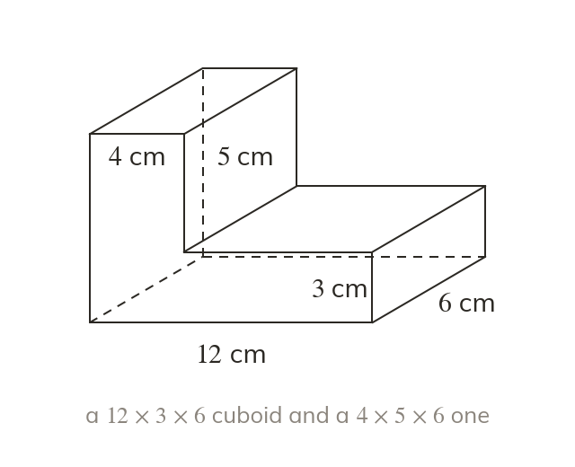
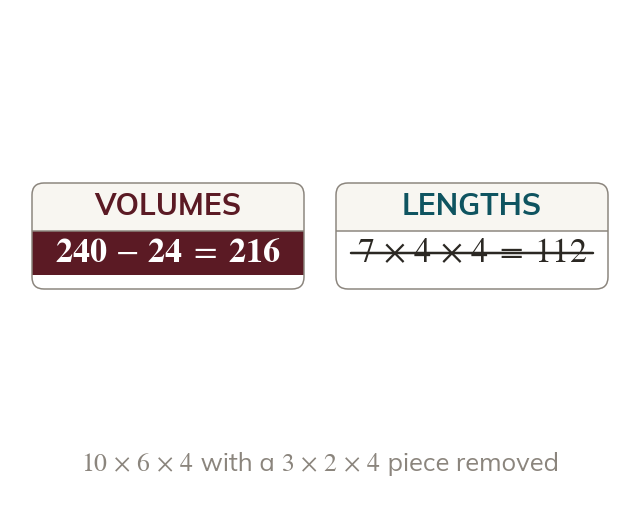
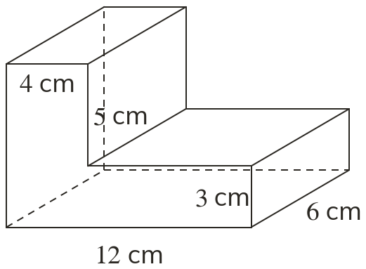
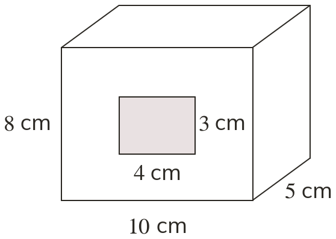
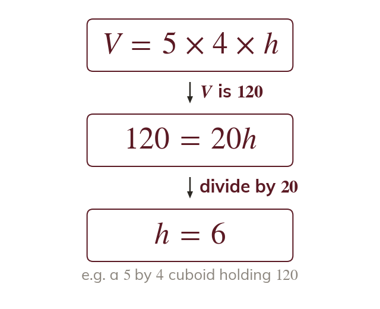
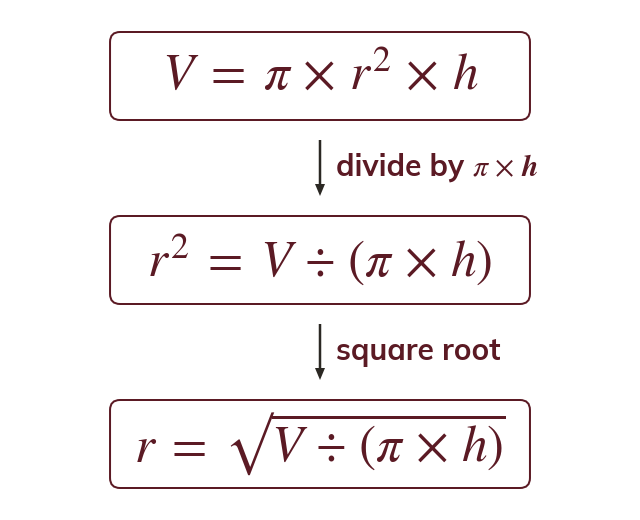
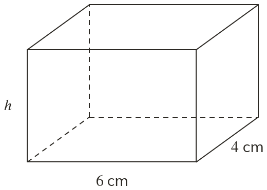

Split into prisms and add
A compound solid is split into prisms whose volumes are added. Each part's own lengths are used, so no piece is counted twice.
A fish tank must hold a set volume, and an engineer has to choose the height that gives it. Working backwards from a volume finds the missing length.
Work down the page at your own pace. Write every answer in your book first, then click to check it.
Read each card, then follow the worked examples one step at a time.

A compound solid is split into prisms whose volumes are added. Each part's own lengths are used, so no piece is counted twice.

A solid with a piece removed is the whole solid minus the piece. Subtract the piece's volume, never its lengths.


Pick an answer. If it's wrong, the feedback tells you which mistake it was.
Read each card, then follow the worked examples one step at a time.

If the volume is known, the volume formula becomes an equation. Solve it for the missing length. Check by putting the length back in.

For a cylinder, divide by to get
Then square root the whole of
Pick an answer. If it's wrong, the feedback tells you which mistake it was.

Finished? Next lesson: 10.12.1 Similar Shapes and Scale Factor.
Log in, then search for a code to practise that skill.